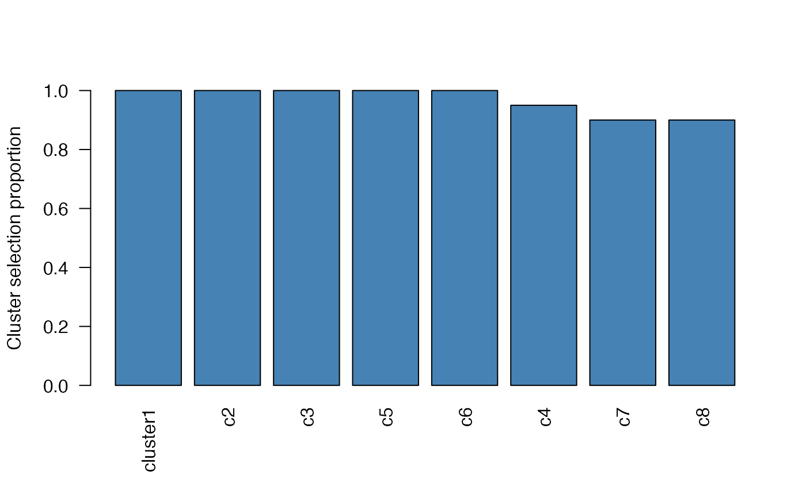
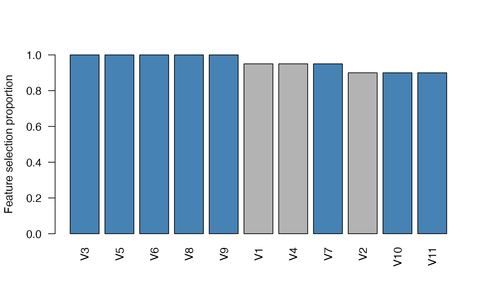

Plot cluster (or feature) selection proportions from cluster stability selection
plot.cssr.RdProduce a base-graphics bar plot of the selection proportions of a fitted
cssr object: one bar per cluster (the default) or per feature, sorted in
decreasing order of selection proportion. When cutoff > 0 a dashed
reference line is drawn at the cutoff, and the bars whose cluster (or
feature) is selected – at the given cutoff and cluster-count constraints
– are highlighted in sel_col, the rest in unsel_col.
Arguments
- x
An object of class "cssr" (the output of the function
css()).- cutoff
Numeric; the selection-proportion threshold used both to draw the dashed reference line (when greater than 0) and to determine which bars are highlighted as selected. Must be between 0 and 1. Default is 0 (in which case no reference line is drawn and, unless
max_num_clustsrestricts it, every cluster is treated as selected).- min_num_clusts
Integer or numeric; the minimum number of clusters to treat as selected regardless of cutoff. (If the chosen cutoff would select fewer than min_num_clusts clusters, the cutoff is effectively lowered until at least min_num_clusts clusters are selected.) Default is 1. May be set to 0 to allow a pure cutoff-based highlight that can be empty (no bar highlighted) when no cluster's selection proportion meets the cutoff.
- max_num_clusts
Integer or numeric; the maximum number of clusters to treat as selected regardless of cutoff. (If the chosen cutoff would select more than max_num_clusts clusters, the cutoff is effectively raised until at most max_num_clusts clusters are selected.) Default is NA (in which case max_num_clusts is ignored).
- type
Character; either "clusters" (the default) to plot one bar per cluster, or "features" to plot one bar per feature. May be abbreviated.
- weighting
Character; passed to
getCssSelections()to determine which individual features are selected (and therefore highlighted) whentype = "features". It has no effect on the cluster bars or on which clusters are highlighted. Must be one of "sparse", "weighted_avg", or "simple_avg". Default is "sparse" (matchinggetCssSelections()andselected()).- ylim
Numeric vector of length 2; the y-axis limits for the bar plot. Default is
c(0, 1), the natural range of a selection proportion.- sel_col
The colour used to fill the bars of selected clusters (or features). Default is "steelblue".
- unsel_col
The colour used to fill the bars of unselected clusters (or features). Default is "grey70".
- ...
Additional graphical parameters passed on to
graphics::barplot()(for examplemainorcex.names). The bar heights, fill colours, andylimare controlled by this method; supplyingcolorylimhere overrides the highlight colours or the default y-axis limits.
Value
Invisibly, the numeric vector of selection proportions that were
plotted: the colMeans() of the cluster (or feature) selection matrix,
sorted in decreasing order, named by cluster (always) or by feature (when the
features of X were named; unnamed otherwise). Called primarily for its side
effect: drawing the bar plot.
Details
The selection that determines the highlight is obtained from
getCssSelections() with the same cutoff, min_num_clusts,
max_num_clusts, and weighting. Which clusters are selected does not
depend on weighting; which features are selected does (the weighting
determines which members of the selected clusters have nonzero weight and are
therefore highlighted when type = "features").
Note that, to match the positional argument order of print.cssr(), the
second positional argument is cutoff; type, weighting, and the
graphical parameters must be supplied by name (for example
plot(x, type = "features")).
See also
print.cssr() and summary.cssr() for printed / tabular overviews
of the same selection proportions; selected() to extract the selected
clusters or features; getCssSelections() for the underlying selection used
to highlight the bars.
Examples
set.seed(1)
data <- genClusteredData(n = 50, p = 11, k_unclustered = 2,
cluster_size = 4, n_clusters = 1, snr = 3)
# Name the features so the feature plot shows labelled, highlighted bars
# (genClusteredData returns X with no column names).
X <- data$X
colnames(X) <- paste0("V", seq_len(ncol(X)))
clusters <- list(cluster1 = 1:4)
res <- css(X = X, y = data$y, lambda = 0.01, clusters = clusters, B = 10)
# Cluster selection proportions (the default):
plot(res)

# Feature selection proportions, highlighting the selected features:
plot(res, type = "features")
